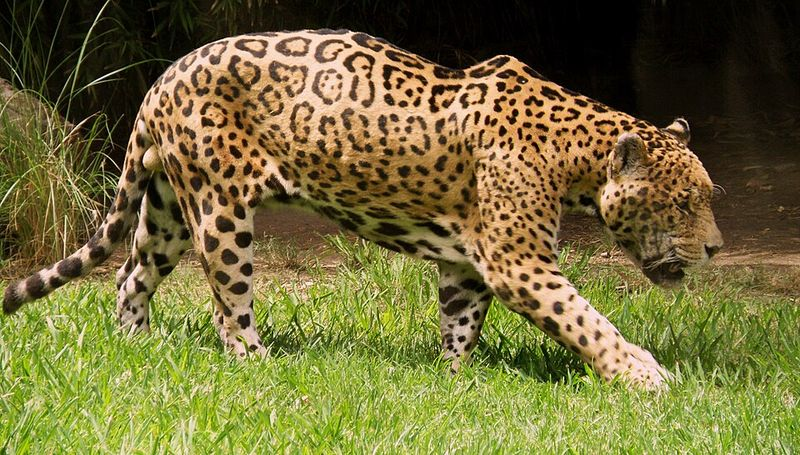

Prepárate para tu examen de nacionalidad colombiana.
Explora las 4 áreas
Preguntas de las cuatro áreas y diagnóstico por área al final. Para acercarte al examen real, responde por escrito.
Toca una región del mapa para explorar su geografía, flora, fauna y gente.

Foto: CHUCAO · CC BY-SA 3.0 · Wikimedia Commons
Pregunta 4 / 20
17 de 20 · el umbral es 70%
En selección simple adivinando se acierta 1 de cada 3. Mídete por escrito para saber cómo irías en el examen.
De lo más flojo a lo que ya dominas.